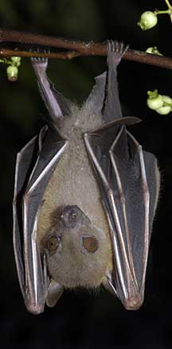
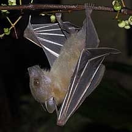

|
|
| vertebrates text index | photo index |
| Phylum Chordata > Subphylum Vertebrata > Class Mammalia |
|
Lesser dog-faced fruit bat Cynopterus brachyotis Family Pteropodidae updated Oct 2016 Where seen? This small bat with a dog-like face is among our most commonly seen bats. According to Baker, it is widespread and common even in urban areas. According to Nowak, they are found in forests and open country. Features: Forearm length about 6.5cm. It has white wing bones and white ear edges. A small bat with a long muzzle without an elaborate 'nose leaf'. Instead, it has prominent tubular nostrils. Together with large eyes, it has a dog-like face. It is sometimes called the Lesser Dog-faced fruit bat and Lesser Short-nosed fruit bat. Generally brown, the male has a reddish collar while the female has a yellowish collar. Several bats (6-12) may roost together. Sometimes under Bird's nest ferns (Asplenium nidus) creating a sheltered area by chewing off some of the inner portions of the 'skirt' of dead leaves under the fern. They also create a shelter out of a palm leaf by biting the ribs of so portions of the leaf droop to form an umbrella. They even shelter in buildings. What does it eat? It eats fruits and drinks nectar. A fruit bat may travel nearly 100km in a single night to feed on fruiting trees such as palms, figs, guavas, bananas, mangoes. As well as on flowers. These fruit bats drink the juice of the fruits, instead of eating the pulp. That is, they mash the fruits in their mouth, drink the juice and spit out the pulp. Thus, they are kind of like flying fruit juicers. But they do swallow small fruits and thus help disperse the seeds of many pioneer forest trees. Baby bats: Mama bat gives birth to one young which weighs about 11gms at birth. She carries her young with her all the time, even as she flies, for about 45-50 days. Status and threats: It is not listed among our threatened animals. |
 Sungei Buloh Wetland Reserve, Sep 03  Sungei Buloh Wetland Reserve, Sep 03 |
| Lesser dog-faced fruit bats on Singapore shores |
| Photos of Lesser dog-faced fruit bats for free download from wildsingapore flickr |
| Distribution in Singapore on this wildsingapore flickr map |
|
Links
References
|
|
|